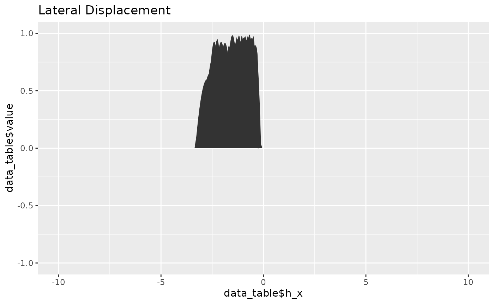
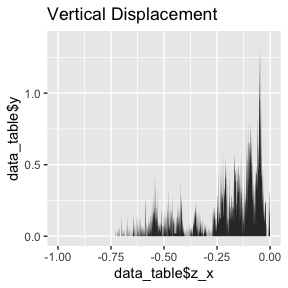
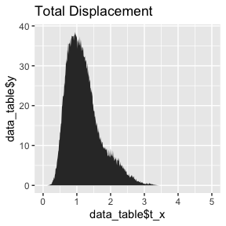

howto_copdr.Rmd
library(copdr)This code is meant to import probability distribution functions (PDFs), i.e. Gaussian curves, and combine them in a modicum of ways for the user, based on several filters to take out the noisy PDFs or PDFs with high uncertainties (i.e. large standard deviations, high coefficient of variation, etc). These PDFs are produced from LaDiCaoz, a Matlab program that allows you to ‘backslip’ offset on a fault from digital elevation models (DEMs) or digital surface models (DSMs). It is a lot of acronyms, I know. I will simplify this description in a future version.
First, you need to make sure that the dataset is in a folder in your working directory. The first part of the code does the following:
#First, set the directory where all your data exist.
directory <- system.file("extdata", package = "copdr")
folder_name = "example_mat"
csv_name = "example.csv"
# list.mat() takes the folder ' example_mat ' in a directory and lists all the file names with the file format '.mat'
backslip_names <- list.mat(directory, folder_name)
#create a list containing three dataframes, including 1. lateral, 2. vertical, 3. total offset
backslip_data <- matrix.mat(directory,folder_name,backslip_names)
#> New names:
#> • `` -> `...1`
#> • `` -> `...2`
#> | | | 0% | | | 1% | |= | 1% | |= | 2% | |= | 3% | |== | 3% | |== | 4% | |== | 5% | |=== | 5% | |=== | 6% | |=== | 7% | |==== | 7% | |==== | 8% | |==== | 9% | |===== | 9% | |===== | 10% | |===== | 11% | |====== | 11% | |====== | 12% | |====== | 13% | |======= | 13% | |======= | 14% | |======= | 15% | |======== | 15% | |======== | 16% | |======== | 17% | |========= | 17% | |========= | 18% | |========= | 19% | |========== | 19% | |========== | 20% | |========== | 21% | |=========== | 21% | |=========== | 22% | |=========== | 23% | |============ | 23% | |============ | 24% | |============ | 25% | |============= | 25% | |============= | 26% | |============= | 27% | |============== | 27% | |============== | 28% | |============== | 29% | |=============== | 29% | |=============== | 30% | |=============== | 31% | |================ | 31% | |================ | 32% | |================ | 33% | |================= | 33% | |================= | 34% | |================= | 35% | |================== | 35% | |================== | 36% | |================== | 37% | |=================== | 37% | |=================== | 38% | |=================== | 39% | |==================== | 39% | |==================== | 40% | |==================== | 41% | |===================== | 41% | |===================== | 42% | |===================== | 43% | |====================== | 43% | |====================== | 44% | |====================== | 45% | |======================= | 45% | |======================= | 46% | |======================= | 47% | |======================== | 47% | |======================== | 48% | |======================== | 49% | |========================= | 49% | |========================= | 50% | |========================= | 51% | |========================== | 51% | |========================== | 52% | |========================== | 53% | |=========================== | 53% | |=========================== | 54% | |=========================== | 55% | |============================ | 55% | |============================ | 56% | |============================ | 57% | |============================= | 57% | |============================= | 58% | |============================= | 59% | |============================== | 59% | |============================== | 60% | |============================== | 61% | |=============================== | 61% | |=============================== | 62% | |=============================== | 63% | |================================ | 63% | |================================ | 64% | |================================ | 65% | |================================= | 65% | |================================= | 66% | |================================= | 67% | |================================== | 67% | |================================== | 68% | |================================== | 69% | |=================================== | 69% | |=================================== | 70% | |=================================== | 71% | |==================================== | 71% | |==================================== | 72% | |==================================== | 73% | |===================================== | 73% | |===================================== | 74% | |===================================== | 75% | |====================================== | 75% | |====================================== | 76% | |====================================== | 77% | |======================================= | 77% | |======================================= | 78% | |======================================= | 79% | |======================================== | 79% | |======================================== | 80% | |======================================== | 81% | |========================================= | 81% | |========================================= | 82% | |========================================= | 83% | |========================================== | 83% | |========================================== | 84% | |========================================== | 85% | |=========================================== | 85% | |=========================================== | 86% | |=========================================== | 87% | |============================================ | 87% | |============================================ | 88% | |============================================ | 89% | |============================================= | 89% | |============================================= | 90% | |============================================= | 91% | |============================================== | 91% | |============================================== | 92% | |============================================== | 93% | |=============================================== | 93% | |=============================================== | 94% | |=============================================== | 95% | |================================================ | 95% | |================================================ | 96% | |================================================ | 97% | |================================================= | 97% | |================================================= | 98% | |================================================= | 99% | |==================================================| 99% | |==================================================| 100%
#load in your reference CSV. See example table "example.csv" for how your table should be formatted
backslip_csv <- readr::read_csv(file.path(directory,csv_name), show_col_types = FALSE)
##################2.1. Visualize raw data
This code plots your data on a default coordinate axis, to check that the data loaded in right.
## DO NOT EDIT ##
#prep data for plotting
raw_lat_data <- simplify4plot(backslip_data[[1]], "lateral")
raw_vert_data <- simplify4plot(backslip_data[[2]], "vertical")
raw_total_data <- simplify4plot(backslip_data[[3]], "total")
# plot raw data
plotMat(raw_lat_data,"lateral")
plotMat(raw_vert_data,"vertical")
plotMat(raw_total_data,"total")
##################2.2 Clip raw data and plot
Use the graphs from 2.1 to clip your dataset.
## USER-DEFINED LIMITS ##
lat_limits <- list(
lat_x_min = -5,
lat_x_max = 0,
lat_y_min = 0,
lat_y_max = 1
)
vert_limits <- list(
vert_x_min = -1,
vert_x_max = 0,
vert_y_min = 0,
vert_y_max = 1
)
total_limits <- list(
total_x_min = 0,
total_x_max = 5,
total_y_min = 0,
total_y_max = 1
)
#######################
## DO NOT EDIT ##
#clip x limits of data
backslip_data_clip <- list(
backslip_lat = data.clip(backslip_data[[1]],"lateral",lat_limits[[1]],lat_limits[[2]]),
backslip_vert = data.clip(backslip_data[[2]],"vertical",vert_limits[[1]],vert_limits[[2]]),
backslip_tot = data.clip(backslip_data[[3]],"total",total_limits[[1]],total_limits[[2]])
)
# plot clipped data
plotMat(simplify4plot(backslip_data_clip[[1]], "lateral"),"lateral",
lat_limits[[1]],lat_limits[[2]],lat_limits[[3]],lat_limits[[4]])
#> Warning: Removed 11 rows containing non-finite outside the scale range
#> (`stat_align()`).
plotMat(simplify4plot(backslip_data_clip[[2]], "vertical"),"vertical",
vert_limits[[1]],vert_limits[[2]], vert_limits[[3]],vert_limits[[4]])
plotMat(simplify4plot(backslip_data_clip[[3]], "total"),"total",
total_limits[[1]],total_limits[[2]],total_limits[[3]],total_limits[[4]])
#> Warning: Removed 10 rows containing non-finite outside the scale range
#> (`stat_align()`).
##################2.3 Confidence Scaling
This code scales each PDF by a confidence value. These confidence values are specific to the dataset, where 1 is the maximum confidence and your largest value is the lowest confidence. In this dataset, 3 is the lowest confidence. The code is set up to accommodate any confidence scale (1 to 3, 1 to 5, 1 to 10, etc). If your confidence values are flipped in the reference metadata, such that 1 is the lowest confidence value, you will need to invert the values in your metadata.
## USER DEFINED INPUT ##
#column of csv table corresponding to confidence values
confidence_column = 9
N_observations = 205
########################
## DO NOT EDIT ##
#scale the data by confidence values and put in a new list
backslip_data_Cscale <- backslip_data
for(i in 1:3){
backslip_data_Cscale[[i]] <- conf.scale(backslip_data_clip[[i]],backslip_csv, confidence_column, N_observations)
}
# plot confidence-scaled data
plotMat(simplify4plot(backslip_data_Cscale[[1]], "lateral"),"lateral",
lat_limits[[1]],lat_limits[[2]],lat_limits[[3]],lat_limits[[4]])
#> Warning: Removed 11 rows containing non-finite outside the scale range
#> (`stat_align()`).
plotMat(simplify4plot(backslip_data_Cscale[[2]], "vertical"),"vertical",
vert_limits[[1]],vert_limits[[2]], vert_limits[[3]],vert_limits[[4]])
plotMat(simplify4plot(backslip_data_Cscale[[3]], "total"),"total",
total_limits[[1]],total_limits[[2]],total_limits[[3]],total_limits[[4]])
#> Warning: Removed 10 rows containing non-finite outside the scale range
#> (`stat_align()`).
##################2.4 Coefficient of variation (COV) calculation
#the master reference CSV “backslip_csv” should have 4-6 columns for displacement statistics # 1. lateral mean, 2. lateral standard deviation, 3. vertical mean, 4. vertical standard deviation, # 5. total mean, 6. total standard devation # for all offset sites
#inputs will need to be the columns of offset data
#the following code calculates the coefficient of variation, #which is the standard deviation divided by the mean #I used lateral in my example because in the example data, #vertical displacement is poorly resolved and small magnitude
## USER DEFINED INPUT ##
# these are the column numbers corresponding to this data in the reference csv
lat_mean = 13
lat_stdev = 14
vert_mean = 15
vert_stdev = 16
total_mean = 17
total_stdev = 18
########################
## DO NOT EDIT ##
backslip_csv <- calc.cov(backslip_csv,"lateral", lat_mean, lat_stdev)
backslip_csv <- calc.cov(backslip_csv,"vertical",vert_mean, vert_stdev)
backslip_csv <- calc.cov(backslip_csv,"total",total_mean, total_stdev)
########################3.1 COV filters
#these are the COV values you want to filter for
COV_filter_vals <- seq(.10,.30, by=0.05)
## DO NOT EDIT ##
# this creates reference data files for the offset_IDs and the corresponding COV values
lat_covREF <- filter_covREF(backslip_csv,1,"lateral",COV_filter_vals)
#> Warning: Using one column matrices in `filter()` was deprecated in dplyr 1.1.0.
#> ℹ Please use one dimensional logical vectors instead.
#> ℹ The deprecated feature was likely used in the copdr package.
#> Please report the issue to the authors.
#> This warning is displayed once every 8 hours.
#> Call `lifecycle::last_lifecycle_warnings()` to see where this warning was
#> generated.
#> New names:
#> New names:
#> New names:
#> New names:
#> • `XY_stdev` -> `XY_stdev...2`
#> • `XY_stdev` -> `XY_stdev...3`
vert_covREF <- filter_covREF(backslip_csv,1,"vertical",COV_filter_vals)
#> New names:
#> New names:
#> New names:
#> New names:
#> • `Z_stdev` -> `Z_stdev...2`
#> • `Z_stdev` -> `Z_stdev...3`
total_covREF <- filter_covREF(backslip_csv,1,"total",COV_filter_vals)
#> New names:
#> New names:
#> New names:
#> New names:
#> • `XY_stdev` -> `XY_stdev...2`
#> • `XY_stdev` -> `XY_stdev...3`
### this filters the input datatable 'backslip_data' by the filtered COV reference files created using filter.covREF
lat_cov2 <- filter_covDAT(backslip_csv,1,"lateral",COV_filter_vals,lat_covREF,backslip_data_Cscale)
#> New names:
#> New names:
#> New names:
#> New names:
#> New names:
#> • `` -> `...1`
vert_cov2 <- filter_covDAT(backslip_csv,1,"vertical",COV_filter_vals,vert_covREF,backslip_data_Cscale)
#> New names:
#> New names:
#> New names:
#> New names:
#> New names:
#> • `` -> `...1`
total_cov2 <- filter_covDAT(backslip_csv,1,"total",COV_filter_vals,total_covREF,backslip_data_Cscale)
#> New names:
#> New names:
#> New names:
#> New names:
#> New names:
#> • `` -> `...1`
########################
# plot confidence-scaled data
plotMatSum(lat_cov2[[5]] ,"lateral", lat_limits[[1]], lat_limits[[2]])
plotMatSum(vert_cov2[[5]] ,"vertical", vert_limits[[1]],vert_limits[[2]])
plotMatSum(total_cov2[[5]] ,"total", total_limits[[1]],total_limits[[2]])
##################